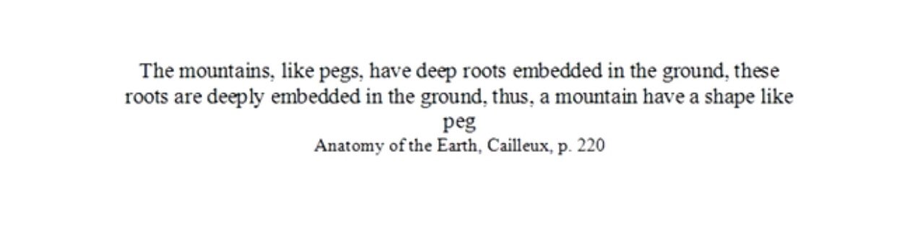
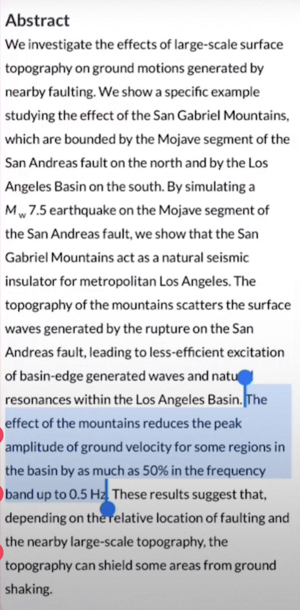
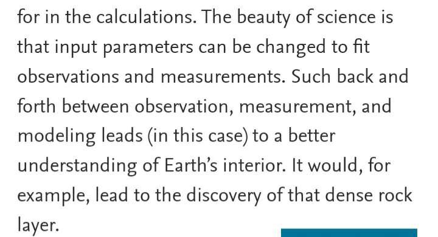
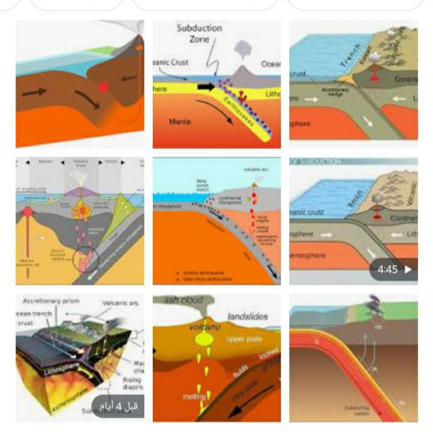
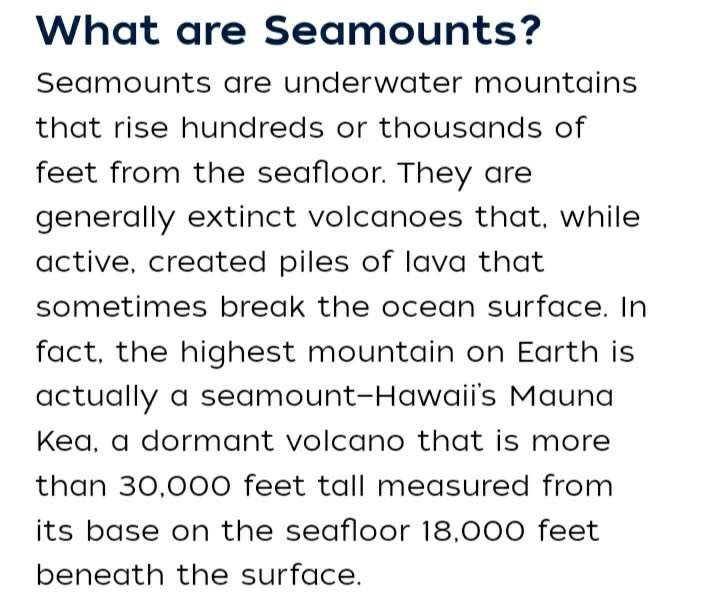
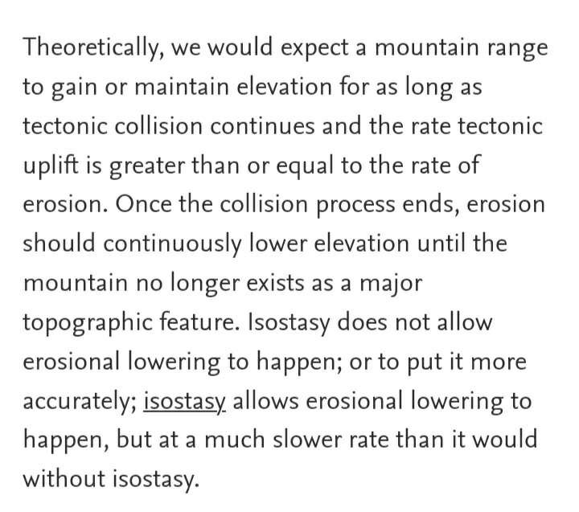
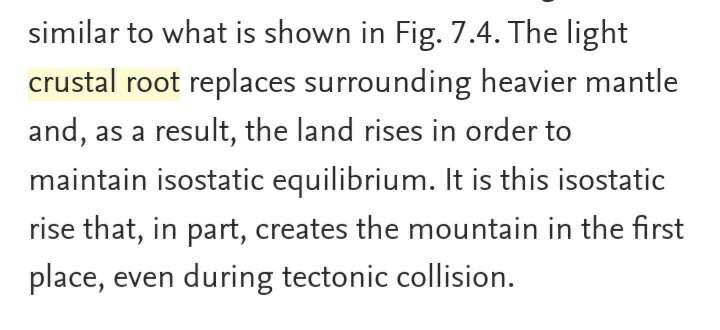
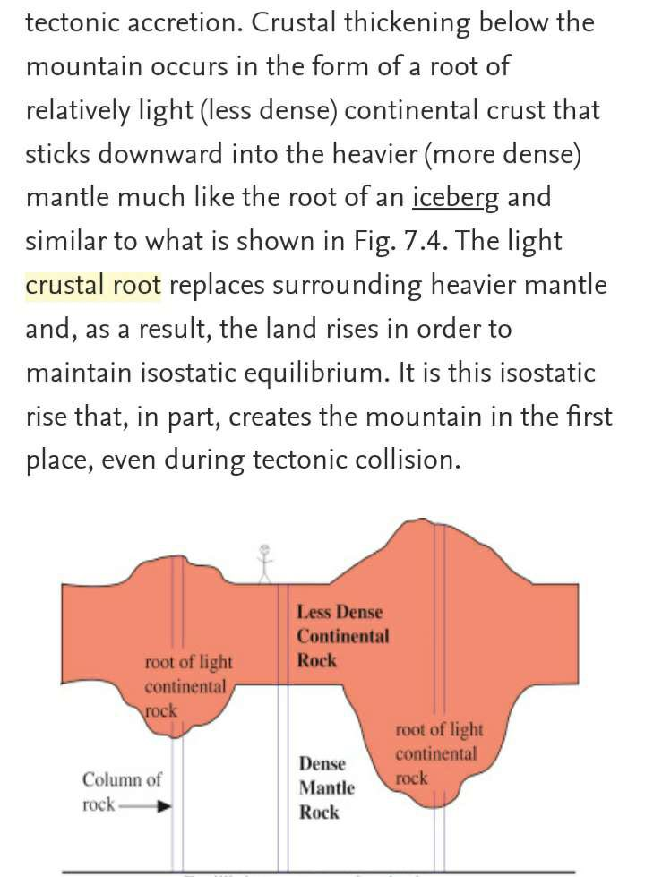

Mountains fixing up earthMountains fixing up earth
shows a closer look at the Earth's crust and upper mantle. It shows that the mountains thrust the mantle
downward and they have roots beneath. To have the mountains in isostatic equilibrium they need to have roots
inside the upper mantle. This is one of the assumptions of Airy (1855); such roots represent masses,
which are known as compensation masses. The geometry and density of such masses play the main role in an
isostatic equilibrium. Different geometries and densities of the compensation masses can keep the crust in
equilibrium
long link


long linklong link
Abstract
We investigate the effects of large-scale surface topography on ground motions generated by nearby faulting.
We show a specific example studying the effect of the San Gabriel Mountains, which are bounded by the Mojave
segment of the San Andreas fault on the north and by the Los Angeles Basin on the south. By simulating a Mw 7.5
earthquake on the Mojave segment of the San Andreas fault, we show that the San Gabriel Mountains act as a natural
seismic insulator for metropolitan Los Angeles. The topography of the mountains scatters the surface waves generated
by the rupture on the San Andreas fault, leading to less-efficient excitation of basin-edge generated waves and
natural resonances within the Los Angeles Basin. The effect of the mountains reduces the peak amplitude of ground
velocity for some regions in the basin by as much as 50% in the frequency band up to 0.5 Hz. These results suggest
that, depending on the relative location of faulting and the nearby large-scale topography,
the topography can shield some areas from ground shaking.
long linkhttps://www.ebnmaryam.com/vb/showthread.php?t=28707
“Mountains have proven to be slightly helpful when it comes to preventing earthquakes. Mountains have the ability
to direct the earthquakes to another region where they tend to become more powerful than their original magnitude.”
https://eartheclipse.com/science/geography/do-mountains-cause-or-prevent-earthquakes.html
“According to the research of Professor Mark van der Meijde, mountains influence the impact of earthquakes.
It was already known that the topography of an area has an influence on earthquakes, but the major influence
at the local level is new. Mountains can reduce the power of quakes, but also direct them to certain places,
making them more powerful than expected.”
“The research started after the earthquake in Kathmandu (Nepal) in 2015. More than 100,000 people were expected
to die, but in the end around 1,700 people in Kathmandu and 11,000 throughout Nepal died as a result of the
earthquake. A lot of research was done, but so far, researchers had not determined why there were so few victims.”
Keep in mind that Nepal is considered one of the top countries with many mountains…
- https://phys.org/news/2020-01-mountains-impact-earthquakes.amp
Aslam alikum
Today we will answer a claim about surah An-Nahl
In verse 15 when allah says
《 وألقى في الارض رواسي أن تميد بكم 》
The first claim is that why did allah said (ألقى)
Isn't that mean he Throw those rawasy wich is mountains ?
Because this is sintafic mistake that is not haw mountain are formed .
The answer is very simple and I will bring the tafsire of both ( altabary ) and ( Fakhruddin Al-Razi )
Both saide that the word (ألقى) doesn't mean Throw but instead it means (جعل) wich is made or created
and not throw
These two squalors understood the meaning of this verses before the field of Geology's existence
The second part of the claims is that Quran makes the claim that the mountains are stabilizing the Earth
crust which is scientifically wrong mountains does not stabilize Earth there is no scientific evidence for
that so this is a scientific error in the Quran
The answer.
In Geology field it's not that simple to prove or disprove any theory because it's based upon speculations
supported by some mathematical explanations yes we have the equipment we need to see the geological structure
of the Earth's crust but we still have problems with understanding the mechanisms of some Natural phenomenas
like earthquake and what's happening during it

But even so there is scientific theories that support what the Quran
For example we know that the Earth crust has the structures that we call mountains and mountains are
distributed in the Earth's crust and we know that there is the mountains that we can see which is above
the surface of the water and there is another types of mountains that exists under water surface we call
them Seamountain the the interesting thing is that there is some theory made by some geologists saying that
this sea mountains act as a Heroes because they are helping in
Halting a subduction earthquake in it's track
So they are associating in the stabilization of the outer crust the we live on or it will case a tsunami
that will destroy everything


https://www.livescience.com/18548-diving-mountains-stop-start-earthquakes-subduction-seamounts.html
And the other hand there is another theory it's called The isostasy Theory this city says that during an a
collision of the internal Earth crusts that will cause a Instability the Earth's tectonic layers so what happens
is that the eyes of Stacey mechanism causing a formation of two parts the first part is the pics of the mountains
that we can absorb and see which we call them the mountains and the second part which is the mountain roots which
is the part that we cannot see and this part is a structure that goes deep to the internal layers of the Earth and
stabilizing these layers to certain level
Scientists also says that when the earthquakes are done and finished the eyes of Stacy mechanisms will make
these mountains disappear because the purpose of this Mountains from the first point is stabilizing the
equilibrium stability of this Liars and so the mountains will slowly disappear and it goes to the original
structure which is a straight line so we can conclude that yes the mountains do stabilize the Earth because
during earthquakes that are Stacy mechanism have to form this mountains in order to stabilize these lies and
after the earthquake is done we see that the purpose of this mountains are already done so we don't need this
mountains anymore so that's why this mountains are disappearing the only reason that this mountain does not
disappear that fast is because the making of us Stacey makes it slower than it normally should.



https://www.sciencedirect.com/topics/earth-and-planetary-sciences/crustal-roothttps://m.youtube.com/watch?v=S2mjEevPoCs&t=847s&pp=2AHPBpACAQ%3D%3D
From 19:11
https://m.youtube.com/watch?v=I2dzYNkfSIY&pp=ygUYc2FwaWVuY2UgaW5zdGl0dXRlIHdoYWxl
Do Mountains Stop Earthquakes?
Mountains are considered to be the nail that holds the Earth together. This process is known as Isostasy.
This is the process of stabilizing the Earth using the stress of gravity from the mountains.
They play a major role in keeping the Earth in balance.
long link